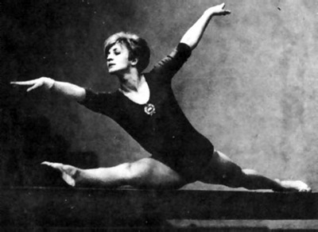

Aniko Ducza (HUN)
1964 Olympic Floor Exercise Bronze Medalist
1962 World Championships Beam Bronze Medalist

Medal Total
Olympic Games: 1 Bronze
World Championships: 1 Bronze
Aniko was born on August 8, 1942, in Budapest.
Competition Results
1957
Hungarian Championships: 1st AA, 1st FX
1958
Hungarian Championships: 1st AA, 1st FX
World Championships: 29th AA
1959
European Championships: 4th AA, 4th UB
1960
BUL-HUN Dual Meet: 2nd Team, 3rd AA
Hungarian Championships: 1st FX
HUN-GDR Dual Meet: 1st Team, 3rd AA
ITA-HUN Dual Meet: 1st Team, 5th AA
Olympic Games: 7th Team, 22nd AA
1961
Hungarian Championships: 1st AA, 1st V, 1st FX
HUN-BUL Dual Meet: 1st Team, 2nd AA
European Championships: 21st AA
1962
Europe-JPN Meet: 2nd AA
FRA-HUN Dual Meet: 2nd Team, 1st AA
Hungarian Championships: 1st AA, 1st V, 1st FX
HUN-YUG Dual Meet: 1st Team, 2nd AA
World Championships: 4th Team, 17th AA, 3rd B
1964
FRA-HUN Dual Meet: 1st Team, 1st AA
FRG-HUN Dual Meet: 1st Team, 1st AA
Hungarian Championships: 1st V, 1st FX
HUN-CSSR Dual Meet: 2nd Team, 1st AA
HUN-JPN Dual Meet: 1st AA
Olympic Games: 5th Team, 16th AA, 3rd FX
1965
European Championships: 6th AA, 4th FX
GBR-HUN Dual Meet: 1st Team, 1st AA
Hungarian Championships: 1st AA, 1st V, 1st B, 1st FX
University Games: 1st AA, 1st B, 1st FX, 2nd UB, 3rd V
1966
FRA-HUN Dual Meet: 2nd Team, 2nd AA
FRG-HUN Dual Meet: 2nd Team, 1st AA
Hungarian Championships: 1st AA, 1st B, 1st FX
ITA-HUN Dual Meet: 1st Team, 1st AA
World Championships: 5th Team, 21st AA, 4th B
1968
Hungarian Championships: 1st FX
NED-HUN Dual Meet: 1st Team, 1st AA
Olympic Games: 5th Team, 19th AA
This page was created on June 18, 2011 and was last updated on March 24, 2020.
© Gymn Forum